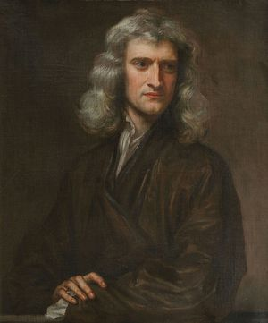
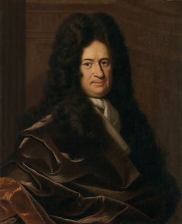

Das Tangentenproblem in der Geschichte
Eine alte Frage
Schon in der Antike fragte man, wie man an eine Kurve eine Gerade legt, die sie in einem Punkt nur „berührt“. Für den Kreis ist das leicht: Die Tangente steht senkrecht auf dem Radius. Für andere Kurven fehlte lange ein allgemeines Verfahren.
Im 17. Jahrhundert wurde das Problem drängend: Physiker wollten Geschwindigkeiten in einem Augenblick bestimmen, Astronomen die Bahnen der Planeten beschreiben und Mathematiker Hoch- und Tiefpunkte von Kurven finden.
Zeitleiste
- um 300 v. Chr.Euklid beschreibt in den „Elementen“ die Tangente an den Kreis als Gerade, die den Kreis berührt, ohne ihn zu schneiden.
- um 225 v. Chr.Archimedes konstruiert Tangenten an die nach ihm benannte Spirale, eine erste Tangente an eine „krumme“ Kurve außer dem Kreis.
- um 1630Pierre de Fermat entwickelt ein Verfahren für Extremwerte und Tangenten: Er verschiebt eine Stelle um eine kleine Größe E, vereinfacht und lässt E danach weg. Das ist im Kern die h-Methode.
- 1637René Descartes stellt in „La Géométrie“ eine eigene Methode vor, bei der er Kreise an die Kurve legt.
- 1665Isaac Newton entwickelt seine „Fluxionenrechnung“, mit der er Änderungsraten wie Geschwindigkeiten berechnet. Er veröffentlicht sie erst viel später.

Isaac Newton, Gemälde von Godfrey Kneller (1689). Gemeinfrei, Wikimedia Commons. - 1684Gottfried Wilhelm Leibniz veröffentlicht als Erster eine Differentialrechnung. Von ihm stammt die Schreibweise \frac{dy}{dx}, die wir noch heute benutzen.

Gottfried Wilhelm Leibniz, Gemälde von Christoph Bernhard Francke (um 1695). Gemeinfrei, Wikimedia Commons. - ab 1700Zwischen Newton und Leibniz entbrennt ein heftiger Streit, wer die Differentialrechnung zuerst erfunden hat. Heute gilt: beide unabhängig voneinander.
- 1821Augustin-Louis Cauchy fasst den Grenzwertbegriff genauer. Damit bekommt das „unendlich kleine“ E von Fermat und Leibniz ein sicheres Fundament.
Einstieg: Wie schnell ist der Stein genau jetzt?
Ein Stein fällt von einer Brücke. Vereinfacht gilt für den Fallweg nach t Sekunden
Durchschnittsgeschwindigkeit
Wähle das Ende des Zeitintervalls. Der Anfang ist immer t = 1 s.
| Intervall | Δs | v̄ = Δs/Δt |
|---|
Dieselbe Idee funktioniert für jede Funktion: Aus der Steigung einer Sekante wird im Grenzfall die Steigung der Tangente. Das probieren wir jetzt im Labor aus.
Labor: Die Sekante wird zur Tangente
Differenzenquotienten, wenn Q sich P nähert
- Steigung der Sekante
- Steigung der Tangente f′(x₀)
Den Grenzwert exakt berechnen
Im Labor haben wir uns dem Wert nur genähert. Mit einer Rechnung können wir ihn exakt bestimmen. Wähle Funktion, Stelle und Methode und gehe die Rechnung Schritt für Schritt durch.
Sicherung
x-Methode
Der zweite Punkt hat die Stelle x, und x läuft gegen x_0.
h-Methode
Der zweite Punkt liegt um h neben x_0, und h läuft gegen 0.
- Der Differenzenquotient ist die Steigung einer Sekante, also eine mittlere Änderungsrate.
- Sein Grenzwert heißt Differentialquotient oder Ableitung f'(x_0). Er ist die Steigung der Tangente, also die lokale Änderungsrate.
- Beide Methoden liefern dasselbe, denn mit x=x_0+h geht die eine in die andere über.
- Wichtig: Man darf h=0 nicht einfach einsetzen, denn dann steht \frac{0}{0} da. Erst kürzen, dann den Grenzwert bilden.